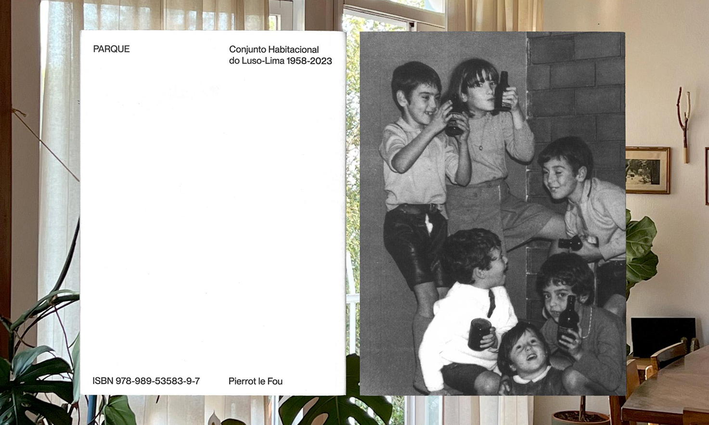
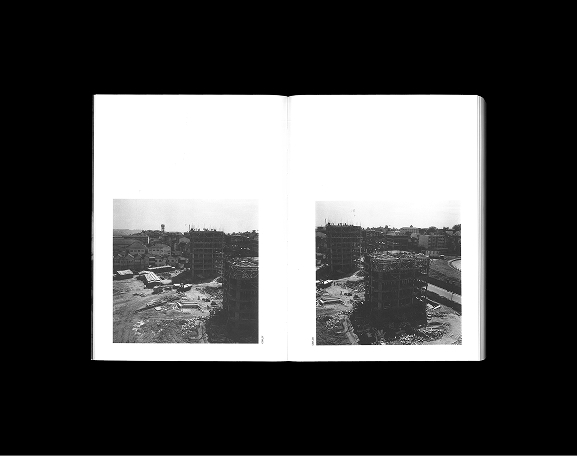
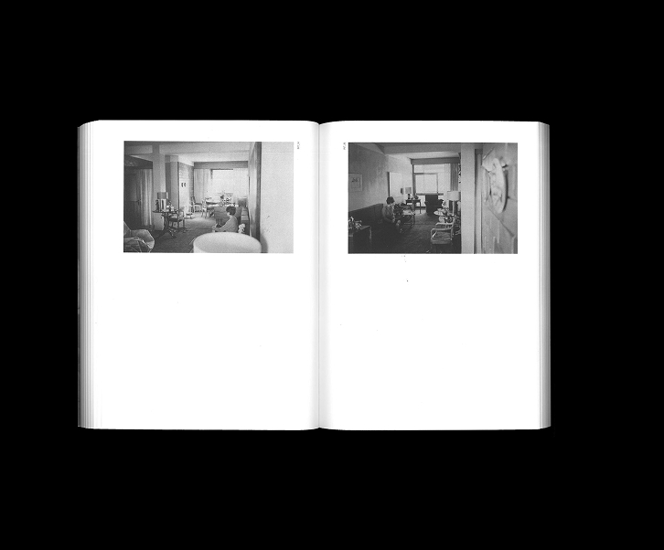
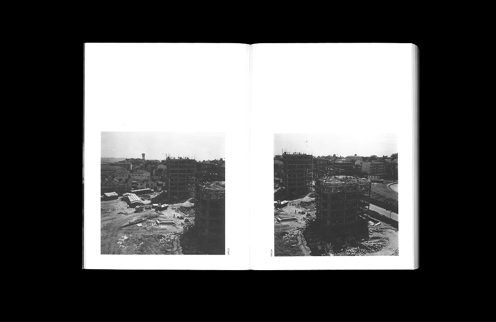

This book is a contribution to the documentation of the tangible and intangible heritage of the Luso-Lima Housing Complex, which has yet to be classified. It consists of different sections of photographs, drawings and essays, which describe the different components that characterise it. The first section brings together photographs by José Carlos Loureiro, which document the construction of the buildings in Campo do Luso, alongside an archive comprising a selection of drawings corresponding to different phases of the architectural project.
The second section of photographs documents the buildings once construction was completed and they were inhabited by the first generation of residents, until around the end of the 1970s. The experiences and uses of the space began to be recorded by José Carlos Loureiro, whose GALP studio is based in Block A, which allowed him to follow the daily life of the complex. Professional photographers also recorded these buildings, such as Teófilo Rego and João Paulo Sotto Mayor. The third set of photographs, also by José Carlos Loureiro, documents three flats in Blocks C and D during this period.
A fourth set of photographs corresponds to family albums that were kindly provided by some of the former and current residents of the housing complex. These images, due to their nature, fulfil a cross-cutting function: they capture occasions and moments that are circumstantial in the relationships they represent, between the people portrayed and the photographers who take the pictures. They are images that serve to document and preserve personal moments and achievements to be relived and remembered in the future.



2023
Luís Albuquerque Pinho,
Luís Pinto Nunes
Luís Sousa Teixeira
Gráfica Maiadouro S.A.
António Tavares, Bernardo Pinto de Almeida, Lúcia Almeida Matos, Luciana Rocha, Luís Albuquerque Pinho, Luís Loureiro, Luís Pinto Nunes, Luísa Pádua Ramos, Sónia Moura archives and photographs · Santa Casa da Misericórdia do Porto, Fundação Instituto Marques da Silva da Universidade do Porto, Câmara Municipal do Porto Divisão Municipal Arquivo Geral, Casa da Arquitectura, Arquivo Atelier GALP, Arquivo Arlindo Rocha. Álvaro Leite Siza Vieira, Ana Deus, Ana Paula Coutinho, Ana Sofia Duque Moreira, Anabela Magalhães, Andrea Soutinho, Andrea Trevisan, António Quadros Ferreira, Catarina Canto Moniz, Catarina Enes, Catarina Fialho, Catarina Providência, Cláudia Cunha, Cristina Bacelar Cerqueira, Dinis Santos, Elvira Leite, Emerenciano, Eugénia Millet Barros, Filipe Costa, Filipe Leiras, Gabriela Trevisan, Henrique Pichel, Ilda Costa, Isabel Gonçalves, João Machado, João Paulo Sotto Mayor, João Pedro Serôdio, João Serôdio, Joaquim Guimarães, Laura Soutinho, Leonor Guedes, Luís Albuquerque Pinho, Luís Ferreira Alves, Luís Loureiro, Luís Pinto Nunes, Luísa Pádua Ramos, Manuel Correia Fernandes, Manuela Praça, Maria Teresa Teixeira, Marta Oliveira Ramos, Marta Rodrigues, Miguel Ferreira da Costa, Os Quatro Vintes (Ângelo de Sousa, Armando Alves, Jorge Pinheiro, José Rodrigues), Pedro Arcanjo, Pedro Figueiredo, Rute Dixo, Sofia Barreira, Teresa Barreto Magro, Teresa Serôdio, Vasco Figueiredo Telles, Vasco Mendes, Vasco Praça, Virgínia Pinho